📘 INTRODUCCIÓN A LAS INSTALACIONES DE ACS
Normativa CTE, RITE, clasificación de sistemas y requisitos generales
CTE HE4
RITE
HS4
RD 487/2022
Tema 1
¿Qué es el ACS?
Los sistemas de Agua Caliente Sanitaria (ACS) distribuyen agua de consumo sometida a un proceso de elevación de temperatura. Deben cumplir las especificaciones y requisitos establecidos en la normativa vigente en cuanto a criterios sanitarios y de calidad del agua para consumo humano.
Normativa Vigente Principal
- RITE: Reglamento de Instalaciones Térmicas de los Edificios
- CTE: Código Técnico de la Edificación
- RD 487/2022: Nueva normativa sobre legionelosis
- HE4: Contribución mínima de energía renovable para ACS
- HS4: Suministro de agua
Clasificación de Sistemas de Producción de ACS
SISTEMAS INDIVIDUALES
Producción directa dentro de cada vivienda con control unitario del consumo.
INSTANTÁNEA
Producción bajo demanda con potencias elevadas. ACS infinita pero caudales instantáneos limitados.
CALENTADORES INSTANTÁNEOS
Aparatos dedicados exclusivamente a producción de ACS por combustión o resistencias eléctricas.
CALDERAS (MIXTAS)
Equipos a presión que producen ACS y calefacción mediante circuito cerrado de agua.
ACUMULACIÓN INDIVIDUAL
Potencias reducidas, caudales elevados pero volumen finito. Ideal para consumos simultáneos.
CALENTADORES ACUMULADORES
Equipos que acumulan volumen de agua calentado mediante foco de calor (gas/electricidad).
CALDERA + ACUMULADOR
Sistema que utiliza caldera para calentar agua almacenada en depósito independiente.
SISTEMAS COLECTIVOS / CENTRALIZADOS
Producción centralizada para varios usuarios o grandes consumos.
ACUMULACIÓN DE USO COLECTIVO
Garantiza volumen y caudal para varias viviendas o grandes consumidores.
ACUMULACIÓN (CALDERA + ACUMULADOR)
Una o varias calderas calientan depósito acumulador con sistema de recirculación.
SISTEMAS DE APOYO TÉRMICO
Aprovechamiento de energías renovables para apoyar producción ordinaria de ACS. Exigencia CTE HE4.
SOLAR TÉRMICO
GEOTERMIA
AEROTERMIA
Requisito CTE HE4: Contribución mínima del 70% de energía renovable para demanda anual de ACS (se reduce al 60% si demanda < 5000 l/día).
1.1. Requisitos de las Instalaciones de ACS según CTE
- Colector de retorno en distribuciones por grupos múltiples de columnas. Debe tener canalización con pendiente descendente desde el extremo superior de las columnas de ida hasta la columna de retorno. Cada uno puede recoger todas o varias de las columnas de ida, que tengan igual presión.
- Columnas de retorno desde extremo superior de columnas de ida o colector de retorno hasta acumulador.
- Redes de retorno discurren paralelas a las de impulsión.
- Tuberías y anclajes deben permitir dilatación libre según RITE.
- En tramos rectos considerar dilatación lineal del material, previendo dilatadores si necesario.
🏠 SISTEMAS INDIVIDUALES DE ACS
Calentadores instantáneos, calderas mixtas, aparatos a gas y termos eléctricos
Instantáneo
Caldera Mixta
Tipos A/B/C
Térmico
Eléctrico
Tema 2
2.1. Introducción - Producción Individual de ACS
La producción individual de ACS se realiza de forma directa dentro de cada vivienda y permite un control unitario del consumo a voluntad del usuario.
🏠 Instantánea
- Más extendida dentro de las instalaciones de ACS individuales
- No hay grandes distancias desde aparato a puntos de consumo
- ACS se genera en el mismo momento en el que se realiza la demanda

2.2.1. Calentador Instantáneo
Definición y Características
Calentadores instantáneos de agua: Aparatos que generan ACS a demanda a través de un circuito abierto.
Característica principal: En instalaciones con estos aparatos no existe un almacenamiento de agua caliente.

Funcionamiento de Calentador Instantáneo a Gas
Para explicar su funcionamiento utilizaremos de ejemplo los de gas al ser los más extendidos en nuestras viviendas.
🔄 Ciclo de Funcionamiento
1
Abrir un grifo
El agua circula por el cuerpo del calentador, accionando una membrana asociada a la válvula de gas.
El agua circula por el cuerpo del calentador, accionando una membrana asociada a la válvula de gas.
1.5
Apertura válvula de gas
La membrana activada abre la válvula de gas, suministrando gas a los quemadores que actúan sobre un serpentín por el que pasa el agua de consumo humano.
La membrana activada abre la válvula de gas, suministrando gas a los quemadores que actúan sobre un serpentín por el que pasa el agua de consumo humano.
2
Calentamiento y distribución
Una vez que el agua recorre todo el serpentín alcanza la temperatura deseada y se distribuye por el circuito de tuberías hasta su punto de consumo.
Una vez que el agua recorre todo el serpentín alcanza la temperatura deseada y se distribuye por el circuito de tuberías hasta su punto de consumo.
3
Cierre del ciclo
El cierre en el punto de consumo hace que la membrana vuelva a su origen, dejando el calentador preparado para un nuevo ciclo.
El cierre en el punto de consumo hace que la membrana vuelva a su origen, dejando el calentador preparado para un nuevo ciclo.
Producción instantánea: El ACS se genera en el mismo momento en el que se realiza la demanda en el punto de consumo.
Rendimiento y Caudal
Aunque pueden requerir mayor potencia energética que otros aparatos, ofrecen un flujo continuo e ilimitado de agua caliente siempre y cuando haya suficiente energía.
Ventajas Espaciales
Ahorro de espacio en instalaciones con consumos reducidos, ya que no requieren depósitos de acumulación.
Tipos Disponibles
Pueden ser eléctricos o a gas. Los de gas son los más extendidos en viviendas, mientras que los eléctricos se tratan en el tema de aparatos productores de calor.
2.2.2. Caldera Mixta
Aparato productor de calor para ACS y calefacción
Tipos de calderas a gas: Atmosféricas, estancas, tiro forzado, condensación (diferencia en tratamiento aire aspirado/combustión)
Atmosféricas
Estancas
Tiro Forzado
Condensación
Cinco Tuberías Inferiores
1
Ida calefacción
Circuito cerrado
2
Salida ACS
Agua caliente consumo
3
Gas Natural/GLP
Combustible
4
Entrada agua fría
Acometida AFCH
5
Retorno calefacción
Circuito cerrado

Modo Calefacción
- Bomba circula agua por serpentín calentado por quemadores
- Circuito cerrado de calefacción
- Distribución a radiadores o suelo radiante
- Prioridad secundaria frente a ACS
Modo ACS
- Sensor flujo detecta consumo → señal módulo control
- Válvula 3 vías motorizada desvía circuito a intercambiador
- Intercambiador placas: cesión temperatura por contacto
- Circuitos separados (no se mezcla agua)
- Prioridad: ACS sobre calefacción
Intercambiador de Calor de Placas
El agua fría pasa por el intercambiador, calentándose entre sus láminas sin mezclarse con el agua del circuito primario.
Transferencia térmica sin mezcla: La cesión de temperatura se realiza por contacto entre placas, manteniendo separados los circuitos.
Prioridad del sistema: La caldera produce ACS o calefacción, pero no simultáneamente. Siempre prioritario el consumo de ACS.
Válvula de Tres Vías
Elemento para dirigir el flujo de agua. Dispone de tres entradas/salidas para circuitos.
- Mezcladora: Une fluidos
- Partidora: Separa fluidos
Sensor de Flujo (Flujostato)
Elemento que detecta el paso del agua, enviando señal al módulo de control para regulación.
En caldera mixta: detecta apertura de grifo de ACS
2.2.3. Aparatos Productores de ACS a Gas
Clasificación: aparatos que generan productos de la combustión (gas, gasoil, pellet…) y los que no (eléctricos). Los de gas son los más extendidos en el interior de las viviendas.
TIPO A
Atmosférico: Productos combustión vertidos al local. Sin evacuación conductida.
Ejemplo: Cocinas de gas
Prohibido desde 01/01/2010
TIPO B
Atmosférico: Productos combustión conducidos al exterior mediante conducto exclusivo (tiro natural/forzado).
Ejemplo: Calderas y calentadores de gas tradicionales
Prohibido desde 01/01/2010
TIPO C
Estanco: Circuito combustión estanco: toma aire exterior, expulsión productos combustión al exterior por conducto tiro forzado.
Ejemplo: Calderas/calentadores estancos a gas
Obligatorio actualmente
Chimeneas y Evacuación
Chimenea: Estructura vertical con conducciones estancas que canalizan productos combustión desde aparatos hasta cubierta.
Tipos Chimeneas
- A) Canalización única principal (colectiva)
- B) Dos canalizaciones concéntricas (interior evacuación, exterior aire limpio)

Normativa RITE
- 01/01/2010: Prohibida instalación aparatos atmosféricos (Tipo A/B)
- Obligatorio aparatos estancos (Tipo C) desde esa fecha
- Generación centralizada >70 KW: evacuación por chimeneas exclusivas por cubierta. Normalmente son tipo B de tiro forzado en cascada.
Evacuación por Fachada (Excepcional)
Solo permitida en instalaciones antiguas sin posibilidad evacuación por cubierta:
Aparatos de GLP y GN
Calderas Tipo C
Hasta 70 KW
Calentadores
Hasta 24,4 KW (pueden ser Tipo B o C)
2.2.4. Termo Eléctrico
Descripción y Componentes
Un termo eléctrico es un depósito de agua, fabricado comúnmente en acero inoxidable o acero al carbono con diferentes revestimientos para protegerlo contra la corrosión, y una envolvente exterior para evitar las pérdidas de temperatura.
- Resistencia eléctrica interior: Encargada de calentar el agua.
- Termostato: Interrumpe la alimentación de corriente hacia la resistencia cuando se alcanza la temperatura deseada.
- Uso: Suele dar servicio a consumos reducidos y los encontraremos en usos individuales de ACS.
Principio de Funcionamiento
El principio de funcionamiento de un termo se basa en la estratificación de diferentes temperaturas del agua, debido a la diferencia en la densidad del líquido en función de su temperatura.
1
Llenado inicial
Abrir llave entrada agua fría
2
Calentamiento
Agua caliente (menos densa) asciende
3
Consumo
ACS se extrae de parte superior
Estratificación: Cuando el agua se calienta, se expande y adquiere una densidad menor, por lo que se desplaza a la parte superior del calderín. El resto del líquido, menos caliente, se acumula en la parte inferior e irá ascendiendo según se vaya calentando.
Extracción de ACS
El ACS que suministra un termo eléctrico es la que se encuentra en la parte superior (mayor temperatura), y se extrae por la parte inferior a través de un espárrago interior.
Salida de agua caliente
Entrada de agua fría
Funcionamiento cíclico: En el momento del consumo de ACS, también entrará agua fría en el depósito, bajando la temperatura del agua interior y activando de nuevo el termostato.

🏢 SISTEMAS CENTRALIZADOS DE ACS
Producción colectiva con acumulación, elementos y circuitos primario/secundario
Interacumulador
Intercambiador
Acumulación
Semiacumulación
Tema 3
3.1. Introducción
Sistemas complejos adaptados a cada edificio
Las instalaciones para la producción de ACS centralizada son sistemas muy complejos, adaptados de forma individual a las exigencias, tanto de diseño como de consumo, del proyecto de ejecución del edificio.
Variables de diseño: Uso del edificio, cantidad de cuartos húmedos, altura manométrica, etc.
Motivo principal: grandes consumos simultáneos
Dar servicio a grandes consumos con sistemas instantáneos no resulta viable ni técnicamente ni en cuanto a consumo.
Ejemplo: Consumo de ACS en un edificio de viviendas a primera hora de la mañana cuando gran parte de los vecinos usan la ducha simultáneamente.
Sistemas con acumulación
Para reducir la potencia necesaria y obtener funcionamientos más homogéneos se utilizan sistemas con acumulación en depósitos.
Acumulación
Los volúmenes de acumulación se diseñan para atender a la demanda punta con el agua acumulada.
Semiacumulación
Los volúmenes solo pueden hacer frente a una parte de esa demanda, requiriendo el apoyo de la producción para cubrir la punta de consumo completa.
Ventaja: En las puntas de demanda del edificio se utiliza el agua acumulada, garantizando temperatura y caudal adecuados con menor consumo que sistemas individuales.
Tres partes principales
Cada instalación térmica difiere, pero todas mantienen un principio común de funcionamiento con tres partes:
Aparato productor de calor
Depósito acumulador
Puntos de consumo
Circuito primario
Enlaza la caldera con el depósito acumulador.
Circuito secundario
Enlaza el depósito acumulador con los puntos de consumo.
Circuitos independientes: Cada circuito dispone de sus elementos de control y funcionamiento.
Funcionamiento en 3 pasos
1
Generación de calor
Aparato calienta agua circuito cerrado (primario)
2
Transferencia de calor
Intercambiador (placas o interacumulador) transfiere calor a circuito secundario (ACS consumo)
3
Almacenamiento y distribución
Agua caliente se almacena en depósito y distribuye a puntos de consumo
Sin mezcla: El agua del circuito primario y la del secundario (agua de consumo) no se mezclan en ningún momento.
Temperatura objetivo en depósitos o acumuladores finales: 60º C
Es esencial disponer de potencia calorífica y acumulación térmica suficientes para absorber caudales y temperatura adecuados en cada punto de suministro.
3.2. Elementos de un Sistema Centralizado de ACS
Depósitos de acumulación
Interacumuladores o acumuladores según capacidad de producción ACS
Características principales:
- Presión mínima: 6 bar (recomendable 8 bar)
- Temperatura: No inferior a 70°C (prevención legionelosis)
Tipos de depósitos:
Únicamente almacena ACS. Requiere intercambiador exterior + bomba secundario.
Envolvente exterior por la que circula agua calderas rodeando acumulador.
Intercambiador tubular interior para cesión térmica + aislamiento exterior.
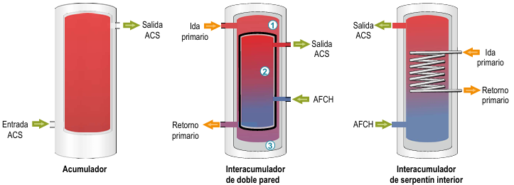
Conexiones obligatorias en depósitos
Según normativa y para mantenimiento
1
Entrada agua consumo
Parte inferior o con deflector interno
2
Salida ACS consumo
Parte superior del depósito
3
Vaciado
Parte inferior para purga de lodos y toma de muestras legionela
4
Registro limpieza
<750L: limpieza manual
>750L: mínimo DN400 ("Boca de Hombre")
>750L: mínimo DN400 ("Boca de Hombre")
5
Sistemas de producción
Con intercambiadores exteriores de placas, o serpentines interiores
6
Sondas de regulación
Termómetros, válvula de seguridad, recirculación de ACS...
Protección catódica: Por tratarse de equipos metálicos con riesgo de corrosión, incorporan protecciones catódicas (ánodos de sacrificio o de corriente inducida).
¿Qué es un interacumulador?
Diferencias clave con el acumulador
Son aparatos que producen acumulación de agua caliente para uso sanitario, conectados siempre a una fuente de calor externa (caldera, panel solar, etc.).
Diferencia clave:
- Interacumulador: Puede producir ACS (tiene serpentín integrado)
- Acumulador: Solo almacena ACS (necesita intercambiador externo)
El serpentín actúa como intercambiador, transfiriendo calor del circuito primario (fuente de calor) al secundario (ACS). Incluye un termostato que controla la temperatura y regula la fuente de calor externa.
Circuito de retorno
Red de tuberías desde puntos más alejados hasta acumulador
Transporta el agua de vuelta desde los puntos más alejados de la red de suministro hasta el acumulador.
Objeto: Mantener un nivel aceptable de temperatura del agua caliente en toda la red de suministro, aún cuando los elementos terminales no demanden consumo durante largos periodos de tiempo.
Intercambiadores
Separan agua de calderas del agua de consumo (características sanitarias)
Compuesto por un conjunto de placas y juntas a través de los cuales circulan los fluidos primario y secundario produciéndose la cesión de temperatura entre ambos circuitos.
Consta de un haz tubular por el interior del cual discurre el agua caliente primaria, colocado en el interior de una carcasa cilíndrica, por la que circula el agua a calentar (secundario ACS).
Contadores de agua
Instrumento para medir e indicar el volumen (m³) de agua. Deben estar homologados, precintados y verificados.
Temperatura <30°C
Temperatura 30°C a 90°C
Obligatorio: Se deberá instalar un contador de ACS por cada uno de los usuarios de un edificio comunitario si el sistema de producción de agua caliente sanitaria es centralizado. En caso de que el ACS sea producido mediante calderas individuales pero cuenten con instalaciones de apoyo solar térmico comunitario, deberá colocarse un contador por cada usuario que pueda hacer uso de esa agua precalentada.
Correcta instalación: El fabricante debe indicar posición del contador, caudal mínimo/máximo/nominal, intervalo de temperaturas, presión máxima de trabajo. Todo contador debe tener una válvula de corte a su entrada y los de ACS, además, dispondrán de una válvula antirretorno.
Detectar fugas: Posibilidad de identificar una fuga de agua sin apariencia, a través del movimiento de la palomilla sin existir consumo. Denota claramente la existencia de un problema por posible pérdida o fuga en el circuito de ACS.
Conducciones
Sistema de transporte de fluido entre dos puntos de una instalación. Deben ser compatibles con el fluido, no pudiendo afectar a su composición ni reaccionar con él, ser capaces de soportar la presión de trabajo de la instalación, y además mantenerse estables en su rango de temperaturas de trabajo.
Temperatura
- Trabajo normal: >50°C
- Periódica (legionelosis): 70°C
- CTE HS4 prohibe acero galvanizado para >60°C ; permite acero inoxidable y cobre
- No hay inconveniente en usar termoplásticos solo si son categoría adecuada
Presión
- Mínima garantizada: 1 bar
- Máxima: 5 bar
- Se puede usar acero inoxidable y cobre; glavanizado solo si cumple la temperatura
- Materiales termoplásticos: soportan menor presión a mayor temperatura, se debe tener cuidado
Depósito de expansión
Elemento de seguridad para absorber cambios de presión por temperatura
Dos zonas separadas por membrana elástica impermeable
En contacto con el agua del sistema
Llena de aire o gas inerte (nitrógeno)
Funcionamiento:
Aumento temperatura
Sobrepresión del líquido comprime el gas evitando averías.
Disminución temperatura
Membrana se desplaza, aumentando espacio ocupado por el gas.
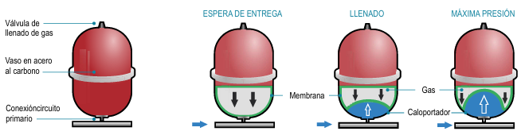
Bombas circuladoras
Mecanismos de impulsión de fluidos caloportadores
Por función
- Bombas de primario: Transferencia calor calderas → primer intercambiador
- Bombas de secundario: Movimiento fluido entre intercambiadores externos y depósito
- Bombas de recirculación: Movimiento agua calentada desde depósito hasta último elemento terminal (≤15 m longitud)
Por construcción
- Rotor seco: Componentes en contacto con fluido separados del motor
- Rotor húmedo: Fluido accede hasta el rotor, refrigerando y lubricando
Nota: Circuito primario es cerrado con poca agresividad. Circuitos secundarios y de recirculación son abiertos, recibiendo continuadamente agua de consumo (más agresiva). Materiales adecuados: bronce o acero inoxidable.
Válvulas de regulación
Para regulación de temperaturas de ACS
Motorizadas
Actúan mediante servomotores comandados por señales de sondas de temperatura.
Termostáticas
Funcionan mediante elemento sensible a temperatura que se posiciona en modo abierto o cerrado.
Por número de vías:
Válvulas 4 vías
Salida depósitos acumulación (acumulación, agua fría, ACS, recirculación).
Válvulas 3 vías
Ubicación próxima a puntos de consumo, no admiten recirculación.
Válvulas 2 vías
Exclusivamente en montantes de recirculación, reducen caudal al necesario.
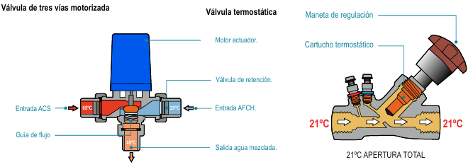
3.3. APARATOS PRODUCTORES DE ACS CENTRALIZADA
Los sistemas de producción centralizada se dividen en dos configuraciones principales según cómo se realiza la transferencia de calor al agua de consumo. Ambos sistemas mantienen circuitos separados entre el agua de calderas (primario) y el agua de consumo (secundario/ACS).
3.3.1. CON DEPÓSITO INTERACUMULADOR
¿Cómo funciona?
El sistema utiliza un interacumulador que integra el intercambiador (serpentín) en el mismo depósito donde se almacena el ACS.
1
Circuito Primario
Agua de caldera circula por serpentín del interacumulador
2
Transferencia Calor
Calor pasa al agua del depósito a través del serpentín
3
Distribución ACS
ACS sale por parte superior hacia puntos de consumo
Recirculación: Una bomba (5) hace retornar el agua desde el punto más alejado al depósito por su parte central (6), completando el circuito secundario.
Reposición: El agua consumida se repone por acometida de AFCH (3) en la parte inferior del interacumulador.
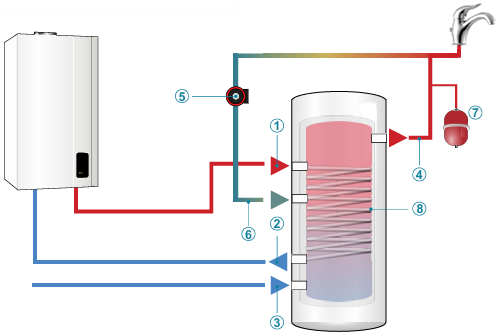
Esquema de Circuitos
Sistema con doble circuito cerrado
Circuito primario y secundario completamente separados
Circuito Primario
Caldera → Serpentín → Retorno caldera
Circuito Secundario
Depósito → Consumo → Retorno bomba
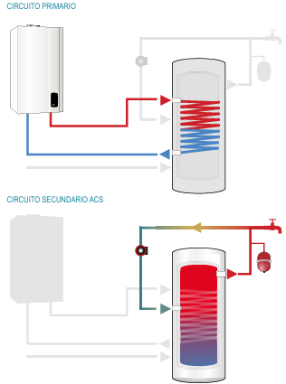
Ventaja: Sistema compacto con intercambiador integrado. El serpentín transfiere calor del circuito primario al agua almacenada en el mismo depósito.
3.3.2. CON INTERCAMBIADOR DE PLACAS Y DEPÓSITO ACUMULADOR
Sistema con intercambiador externo
En este sistema, el depósito solo almacena ACS y el intercambio de calor se realiza en un intercambiador de placas externo. Nunca se utiliza directamente la caldera para calentar el agua de consumo.
Separación de circuitos: El agua de calderas no puede circular por elementos en contacto con la radiación del combustible para mantener las características sanitarias del ACS.
Circuito Primario (A)
Se establece entre caldera e intercambiador. El agua caliente entra por orificio superior del intercambiador y sale por el inferior inmediato, retornando a la caldera.
Circuito Secundario (B)
Lo forman acumulador e intercambiador. El agua fría sale del depósito, entra por tubo inferior del intercambiador, se calienta por contacto entre placas y sale como ACS por tubo superior.
Ciclo completo (C): El ACS se dirige al depósito de inercia, se distribuye al consumo, y mediante bomba circuladora retorna al depósito. El agua consumida se repone por acometida AFCH en parte inferior.

Funcionamiento del intercambiador de placas
Transferencia térmica por contacto entre placas
Los fluidos primario y secundario nunca se mezclan
Entrada fluido caliente (primario)
Agua caliente de caldera entra por parte superior del intercambiador
Salida ACS calentada (secundario)
Agua fría se calienta al pasar entre las placas y sale como ACS
Sin mezcla de fluidos
Los circuitos primario y secundario están completamente separados por las placas metálicas
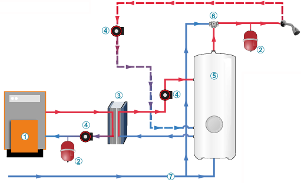
Importante: Este sistema requiere una bomba de secundario adicional para hacer circular el agua entre el depósito y el intercambiador de placas.
☀️ INSTALACIONES DE APOYO SOLAR PARA ACS
CTE HE4, captadores solares térmicos y sistemas individual/centralizado con apoyo solar
CTE HE4
70% renovable
Captadores
Circuito cerrado
Tema 4
Introducción y Normativa CTE HE4
Contexto normativo
El Código Técnico de la Edificación (CTE) en su documento básico HE establece la obligatoriedad de utilizar energía renovable para ACS en edificios nuevos desde 2006.
Instalaciones de apoyo solar térmico son comunes en la mayoría de las nuevas edificaciones para cumplir con estos requisitos.
Exigencia básica HE4 - Artículo 15.5
"Los edificios satisfarán sus necesidades de ACS y de climatización de piscina cubierta empleando en gran medida energía procedente de fuentes renovables o procesos de cogeneración renovables".
La energía puede generarse en el propio edificio o mediante conexión a sistema urbano de calefacción.
Cogeneración renovable
UNE EN ISO 52000-1:2019 define cogeneración como generación simultánea de energía térmica y eléctrica/mecánica.
Se consideran solo sistemas alimentados por energía renovable (biomasa), no los de combustibles fósiles como gasóleo.
Contribución mínima energía renovable para demanda anual de ACS: 70%
Incluye pérdidas térmicas por distribución, acumulación y recirculación. Obtenida a partir de valores mensuales.
Reducción aplicable
Se reduce al 60% cuando demanda ACS < 5000 l/día
Origen válido
Solo energía renovable de origen in situ, proximidades del edificio, o biomasa sólida
Tipos de Captadores Solares Térmicos
Funcionamiento básico
Los captadores aprovechan energía solar para calentar agua (ACS, calefacción, piscinas). Pueden calentar directamente el agua o usar fluido caloportador con aditivos antioxidantes y anticongelantes.
Fluido caloportador: Especialmente eficiente para captar radiación térmica solar.
CAPTADOR SOLAR DE TERMOSIFÓN
Funcionamiento por diferencia de densidad: Fluido caliente (menos denso) asciende, frío desciende.
Aplicando calor (radiación solar) a parte del circuito, se establece flujo continuo por presión diferencial.
Aplicación
El fluido caloportador pasa por depósito de agua de consumo para calentarla y producir ACS.
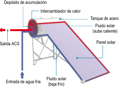
CAPTADORES SOLARES PLANOS
Tipo más común aunque no el más eficiente.
Conjunto de tubos bajo plancha de vidrio en caja rectangular cerrada.
Principio "trampa de calor"
Tubos unidos a placa colectora reciben radiación atrapada entre placa y vidrio (efecto invernadero).
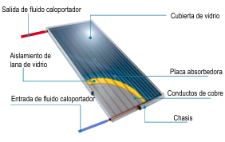
CAPTADORES DE TUBOS DE VACÍO
Mayor eficiencia: 90% superior respecto a otros tipos.
Estructura de peine: eje central con fluido caloportador y tubos de vacío como "púas" con placas de cobre interior.
Ventajas
- Configuración cilíndrica: captación perpendicular continua
- Vacío: mejor retención del calor captado
- Eficiencia muy superior
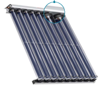
Sistemas de circuito cerrado: Lo más común son sistemas termosolares con circuitos independientes (primario y secundario). El agua de consumo no pasa por los captadores; un fluido caloportador gana energía térmica y la cede al agua mediante intercambiador, sin mezclarse nunca.
4.1. ACS Individual con Apoyo Solar
Sistema de circuito cerrado individual
Instalación termosolar con dos circuitos independientes mínimo: primario (fluido caloportador) y secundario (agua de consumo).
1
Captación Solar
Captador solar (13) calienta fluido caloportador
2
Intercambio de Calor
Intercambiador (3) transfiere calor al agua
3
Almacenamiento
ACS solar se almacena en depósito (8)
Circuito Primario de Producción Solar
- Fluido sale captador (13) por tubería ida (1)
- Entra intercambiador (3) superior, sale inferior
- Retorna al captador por tubería (2)
- Bomba circuladora (5) y vaso expansión (4) mantienen presión
Circuito Secundario de Producción Solar
- Otra bomba circuladora (14) impulsa agua por conducción (7)
- Agua entra intercambiador inferior, sale superior como ACS
- Entra al depósito acumulador (8) por tubo (6)
Integración con caldera y ahorro energético
Sistema solar como precalentador del agua
Reducción significativa del consumo de combustible
Válvula Mezcladora (11)
Situada al pie de caldera, prioriza entrada de agua desde depósito solar sobre AFCH directa (10)
Caldera (9) - Modulación
Solo debe elevar temperatura agua precalentada, no calentarla desde temperatura red (12-14°C). Consiguiente ahorro combustible.
Circuito Secundario de Consumo
Desde salida de ACS de caldera hacia puntos de consumo final
Distinción de tres circuitos: PRIMARIO DE PRODUCCIÓN SOLAR, SECUNDARIO DE PRODUCCIÓN SOLAR CON RECIRCULACIÓN, y SECUNDARIO DE CONSUMO desde caldera.
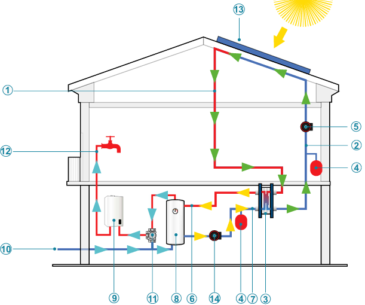
¿Qué es y cómo funciona un intercambiador de calor?
Dispositivo que transfiere calor de un fluido a otro de menor temperatura mediante placas metálicas o tubos, sin mezclar los fluidos.
Principio físico: El calor fluye del cuerpo más caliente al más frío hasta alcanzar equilibrio térmico.
Entrada fluido caliente
Procedente del circuito primario (captador solar)
Entrada agua fría
Agua de consumo a calentar
Salida ACS calentada
Agua ya caliente para consumo
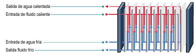
4.2. ACS Centralizada con Apoyo Solar
Sistema con dos productores en serie
Obligatorio en nueva edificación desde 2006. Mismo principio que instalaciones térmicas pero con dos aparatos productores funcionando en serie:
Paneles solares térmicos
Producción inicial y precalentamiento
Calderas
Apoyo térmico y elevación final temperatura
Configuración típica
4 depósitos interacumuladores de ACS (5) en serie. Dos primeros asociados a paneles solares, dos siguientes a calderas.
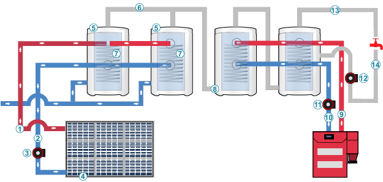
Etapa solar - Primeros dos depósitos
Directamente asociados a paneles solares térmicos.
Circuito primario solar: Bomba circuladora (3) establece circuito ida/retorno entre paneles solares y serpentines (7) de interacumuladores.
Acometida AFCH (A) en parte inferior repone ACS consumida.
Conexión entre depósitos: Conectados por parte superior, acometen al tercer depósito por parte inferior, haciendo circular agua precalentada.
Etapa caldera - Últimos dos depósitos
Circuitos asociados a calderas de producción (15) de ACS.
Funcionamiento: Los dos primeros depósitos suministran agua precalentada a los siguientes, actuando como depósitos de inercia. Caldera necesita menos calor para alcanzar 60°C → ahorro energético.
Distribución a consumo: Desde parte superior tercer depósito, tubería enlaza con parte inferior cuarto depósito. Desde este último sale tubería de ACS (13) a puntos de consumo, con entrada de retorno (14).
Depósitos de inercia: Los tres primeros actúan como reserva térmica. Cuarto depósito es de consumo activo.
Interpretación de instalaciones térmicas
Aunque complejas visualmente, todas las instalaciones térmicas comparten los mismos principios básicos de funcionamiento: circuitos primario/secundario, transferencia de calor sin mezcla, y sistemas de acumulación.
Aspectos Prácticos: Contadores y Gestión de Fugas
Sistema comunitario con apoyo solar centralizado
El RITE obliga a que éste tipo de instalaciones dispongan de un sistema auxiliar de energía para tratamiento anti-legionela.
Vivienda con dos acometidas de agua:
AFCH (1)
Desde batería de contadores divisionarios del edificio
ACS solar (2)
De producción solar comunitaria
Convergen en entrada del aparato productor (3) individual de ACS.
Contador ACS individual obligatorio: Para repartir gastos entre vecinos. Compañía factura a comunidad, comunidad a cada vecino según consumo.
Neutralización de fugas: En caso de fuga en instalación particular de ACS, actuar sobre contador ACS individual (1) y AFCH de batería divisionaria (2).
Gestión de fugas en instalaciones con apoyo solar
Escenario típico: Fuga en edificio nuevo sin acceso a vivienda. Normalmente se corta suministro desde centralización de contadores de agua fría.
Problema específico: Si fuga está en circuito ACS, cortar solo AFCH no es suficiente porque existe segunda vía de entrada: agua caliente desde acumulador solar comunitario.
Segunda vía de entrada: Agua caliente desde acumulador solar se dirige a válvula mezcladora, donde se combina con agua fría antes de llegar a caldera de vivienda.
Solución práctica: Aunque válvula mezcladora está dentro de vivienda, debe existir en zonas comunes contador de apoyo solar con llave de corte. Cerrar esta llave interrumpe segunda entrada de agua y aísla correctamente la fuga.
🦠 ANEXO I: LEGIONELLA Y PROTECCIÓN CATÓDICA
Prevención legionelosis, RD 487/2022, y sistemas protección contra corrosión
Legionella
RD 487/2022
Protección Catódica
Ánodos
Anexo I
A1. LEGIONELLA O LEGIONELOSIS
La bacteria Legionella
Bacteria que se desarrolla en ambientes de humedad y calor, especialmente en verano y otoño.
Provoca legionelosis, enfermedad altamente contagiosa que se transmite por inhalación de vapores de agua o agua dispersada (mangueras de baldeo).
Condiciones óptimas de crecimiento:
Óptimo
35-37°C
35-37°C
Rango multiplicación
20-50°C
20-50°C
Factores que favorecen su multiplicación
Varios factores en instalaciones de agua favorecen el desarrollo de Legionella:
Factores críticos:
- Estancamiento de agua
- Acumulación de lodos
- Acumulación de materia orgánica
- Materia de corrosión
A2. PREVENCIÓN DE LA LEGIONELOSIS
Clasificación de riesgo en instalaciones de ACS
GRUPO 1 - ALTO RIESGO
Instalaciones de producción de ACS con acumulación y recirculación
MENOR RIESGO
Instalaciones de ACS sin recirculación
Condiciones de funcionamiento habituales
- Agua acumulada a temperatura ≥ 60°C
- Temperatura ≥ 50°C en puntos más alejados
- Instalación debe permitir que agua alcance 70°C
- Si sistema aprovechamiento térmico no asegura 60°C continuos, garantizar 60°C en acumulador final antes de distribución
- Temperatura agua fría lo más baja posible, idealmente <20°C
Separación tuberías: Tuberías agua fría suficientemente alejadas de las de agua caliente, o en su defecto, aisladas térmicamente.
Medidas adicionales de prevención
Sistemas de filtración
Disponer en agua de aporte de filtros mecánicos de partículas según UNE-EN 13.443 parte 1, dimensiones entre 80µm y 150µm.
Accesibilidad
Facilitar accesibilidad a equipos para inspección, limpieza, desinfección y toma de muestras.
Válvulas de retención
Disponer de sistema de válvulas de retención según UNE-EN 1.717 que evite retornos de agua por pérdida de presión o disminución de caudal, especialmente para evitar mezclas de agua de diferentes circuitos, calidades o usos.
A3. NUEVA NORMATIVA RD 487/2022
Real Decreto 487/2022 de 21 de junio
La creación de un Plan de Prevención y Control de Legionela (PPCL) y un Plan Sanitario frente a la Legionela (PSL) es requerida por el nuevo RD 487/2022.
Responsabilidad: La creación de estos planes recae sobre el responsable de la instalación.
¿Cómo afecta la normativa al diseño de la instalación?
1. Acumuladores no estratificados
Temperatura debe ser totalmente homogénea y superior a 60°C.
2. Temperatura salida uniforme
Agua que sale hacia los procesos debe salir en todo momento sobre 60°C.
3. Desinfección térmica retorno
Agua de retorno antes de volver al acumulador debe pasar por proceso de desinfección térmica previa.
Implicación práctica: En muchos casos se debe añadir proceso de calentamiento para que el agua no retorne fría al acumulador, evitando así la proliferación de legionela.
A4. PROTECCIÓN CATÓDICA
Definición y principio de funcionamiento
La protección catódica es el conjunto de dispositivos que protege una instalación de la corrosión. Engloba fenómenos fisicoquímicos que dan lugar al deterioro del depósito metálico, siendo la forma más conocida la oxidación.
Oxidación/Reducción (REDOX): La oxidación es la pérdida de electrones de un elemento que se convierte en un ión positivo. Para que el metal del depósito pierda electrones, otro elemento debe ganarlos, convirtiéndose en ión negativo.
Medio de transporte: Esta reacción necesita un medio de transporte de cargas: el agua que contiene sales minerales, cloro y demás elementos disueltos (iones). Este medio es perfecto para procesos electroquímicos de corrosión.
1. ÁNODOS DE SACRIFICIO (Magnesio)
Material más utilizado: Magnesio por su elevada electronegatividad.
Proceso de neutralización: Lleva inevitablemente a la descomposición del ánodo de magnesio hasta su completa desaparición.
Limitación: Cuando el ánodo se descompone completamente, la protección desaparece por completo. Requiere sustitución periódica.
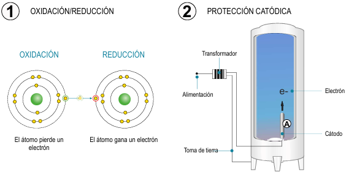
2. ÁNODOS DE CORRIENTE INDUCIDA (Electrónicos)
También conocida como ánodo electrónico. Los electrones no son aportados por un metal que se descompone, sino directamente desde la red de suministro eléctrico.
Transformación necesaria: Incorpora un transformador que convierte la corriente alterna de red en corriente continua.
Regulación electrónica: Generalmente incorpora dispositivo de regulación electrónico.
Componentes clave
- Soporte físico: Varilla de metal noble (generalmente titanio) que no interviene en el proceso REDOX
- Inyección de electrones: Desde varilla de titanio se inyectan electrones a través del ánodo
- Neutralización: Se consigue neutralización del proceso de oxidación/reducción
Ventaja: No se desgasta como los ánodos de sacrificio, ofreciendo protección continua sin necesidad de sustitución periódica.
Comparación de sistemas de protección catódica
ÁNODOS DE SACRIFICIO
- Material: Magnesio (alta electronegatividad)
- Principio: Se descompone para proteger
- Mantenimiento: Sustitución periódica necesaria
- Coste inicial: Menor
- Duración: Limitada (se agota)
ÁNODOS ELECTRÓNICOS
- Material: Titanio (metal noble)
- Principio: Inyección corriente eléctrica
- Mantenimiento: Mínimo (solo eléctrico)
- Coste inicial: Mayor
- Duración: Prácticamente ilimitada
Aplicación en depósitos de ACS: Por tratarse de equipos metálicos con riesgo de corrosión, los depósitos de acumulación de ACS incorporan protecciones catódicas, ya sea mediante ánodos de sacrificio o de corriente inducida.